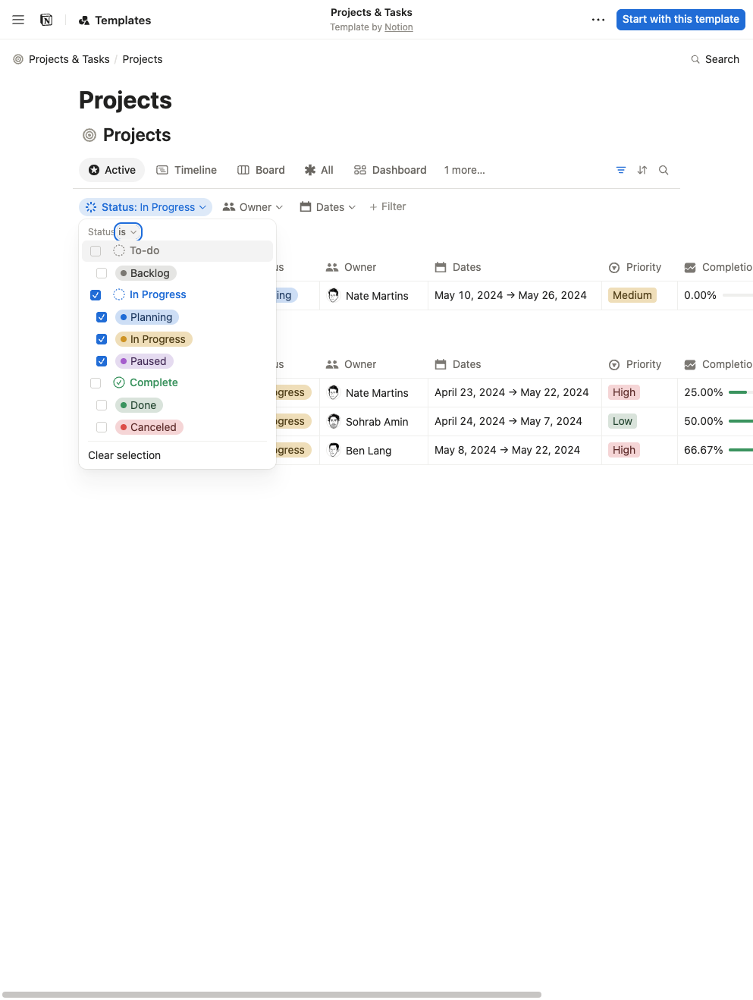
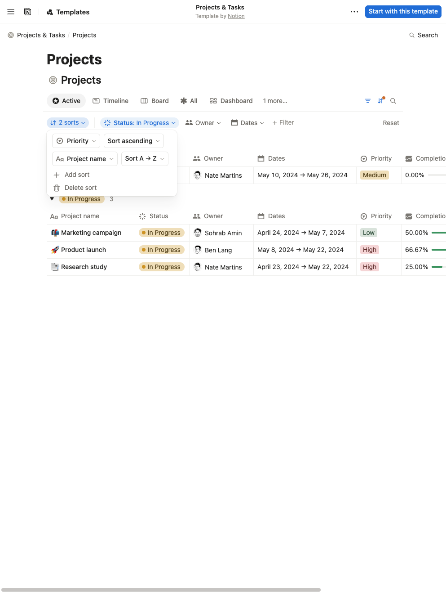
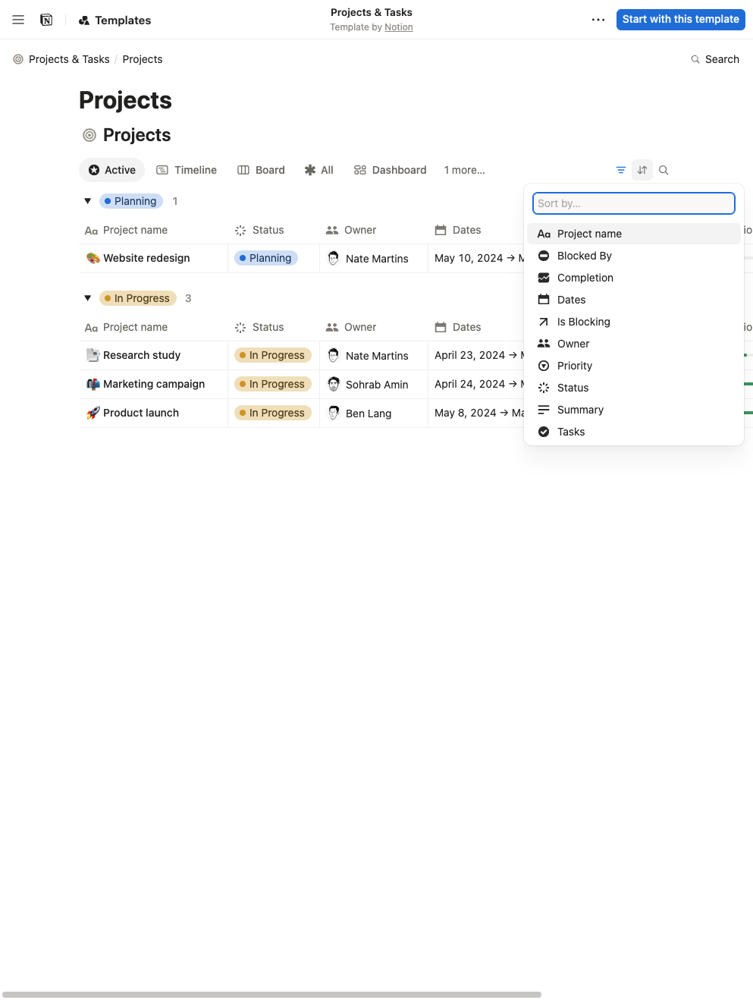
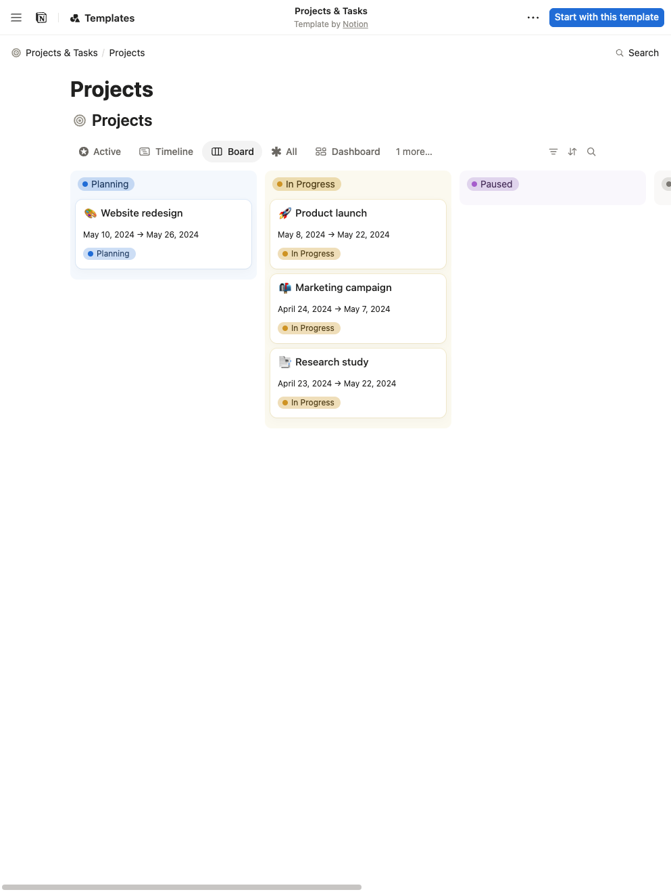
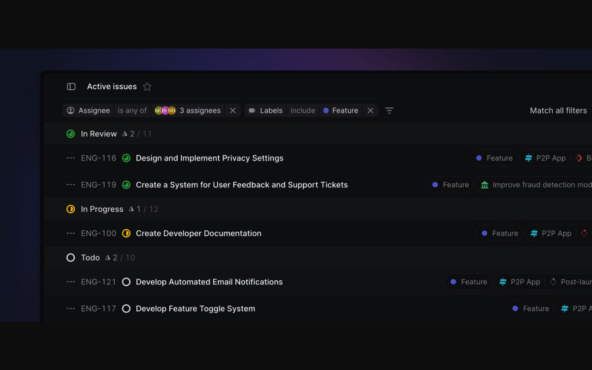
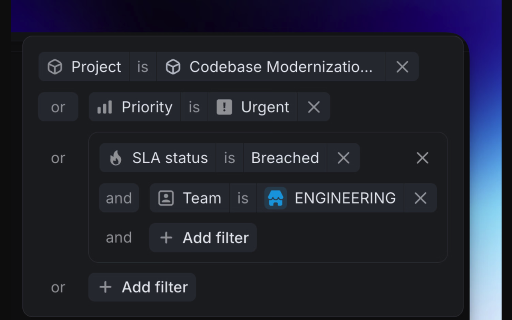
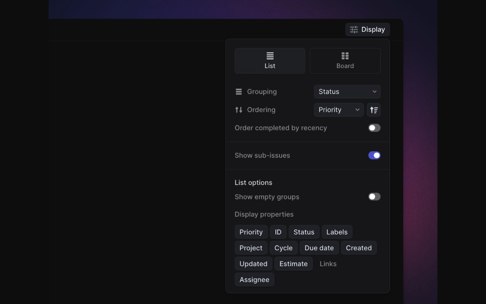

Filtering and ordering references
Seven browser captures. Notion is a live public database; Linear shows official static product examples.

Live interaction. The active condition stays visible below the view tabs. Scroll the image to inspect the full capture.

Live interaction. Two rules share one popover; the closed control summarizes their count. Visitor changes were reset afterward.

Live interaction. Start with a field, then show the directions appropriate to that field.

Live interaction. Header controls remain available on the board. Notion views have independent settings.

Official static example, captured in the browser. The query remains readable while the issue list stays in view.

Official static example, captured in the browser. Group boundaries explain the query's meaning.

Official static example, captured in the browser. This establishes one ordering field and reversal, not a multi-key editor.
For uier: compact chips for common filters, All/Any groups for complex logic, and ordered sort rules. Use the same query in the app and toolbar, with controls sized for each surface.